Explorando o mundo dos números: aventuras nas planificações, frações e números decimais!
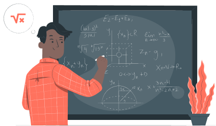A nossa jornada pelas planificações inicia agora!
Você já observou como é a superfície de uma bola de futebol? Percebeu a sua estrutura? Relembre observando a imagem da bola de futebol em um campo gramado.
Veja que a bola é formada por várias peças poligonais, costuradas lado a lado. Quando inflada, ela terá o formato arredondado dessas peças, que se deve à pressão interna do ar. A reunião dessa superfície com o seu interior é um exemplo de poliedro!
Observe a imagem do poliedro para entender melhor
as suas características.
-
Cada polígono que compõe a superfície do poliedro
é chamado de face do poliedro. - Cada lado do poliedro é chamado de aresta do poliedro.
-
Cada encontro dos lados de uma face qualquer
do poliedro é chamado de vértice do poliedro.
Clique nos números posicionados sobre o poliedro para ver
mais sobre essa forma geométrica.
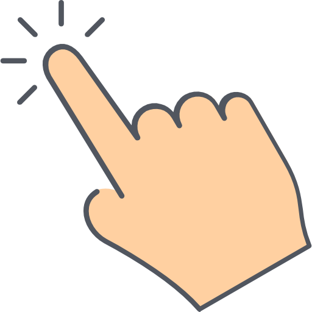
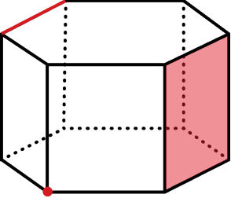
Voltando ao exemplo da bola!
Você sabe que ela não foi criada dessa forma, certo? Primeiro, foi criada uma forma planificada e, depois, “fechada”, de modo a dar forma à figura esférica (a bola).
Veja o exemplo na imagem abaixo.
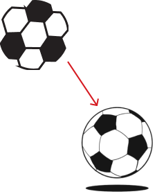
Planificar sólidos geométricos é uma forma de apresentá-los usando apenas um plano, ou seja, representar um objeto tridimensional em apenas duas dimensões. Para fazer uma planificação, basta construir uma figura usando as partes externas em um plano bidimensional.
A planificação de sólidos geométricos é muito útil para o cálculo da área e, também, para a criação de moldes para realizar a montagem desses sólidos.
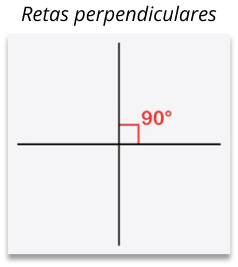
Vamos nos aventurar pelas planificações dos sólidos conhecidos!
Alguns exemplos de sólidos são: o cubo, o paralelepípedo, o prisma, a pirâmide, o cilindro e o cone. Veja os exemplos abaixo. Para ampliar, clique sobre a imagem que você deseja ver.
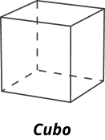
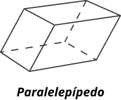
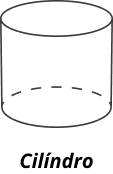
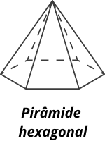
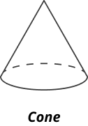
Dados são cubos!
Para montar um dado, por exemplo, precisamos construir a sua planificação, ou seja, precisamos visualizar esse dado “aberto”. Observe a imagem do dado planificado. Não te lembra uma daquelas caixas de entrega? Só que essa daqui está, de certa forma, desmontada. Veja abaixo como é um dado planificado e um dado montado.
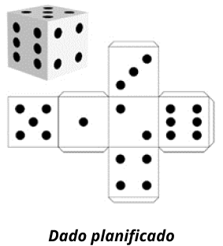
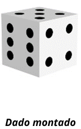
Para entender melhor como o dado saiu desse formato planificado e foi para o montado, assista este vídeo disponível na internet. Você verá, na prática, como funciona a planificação de sólidos geométricos!
Sorvete tem sabor e tem geometria!
As figuras sólidas podem, muitas vezes, nos enganar, sabia? Como você imagina que é a forma da embalagem de um desses sorvetes ao lado?
Pois é, não é um triângulo. Na verdade, é um setor circular. Mas, por ora, só será importante associar o sólido (cone) com a sua planificação.
Observe a figura abaixo:

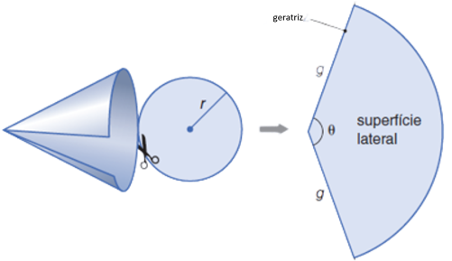
Para complementar os seus estudos em planificações, assista ao vídeo a seguir, no qual uma professora mostra diversos sólidos geométricos planificados!
Clique aqui e aperte o play!
Hummm... Batata chips!
Sabe aquelas latas de batatas chips que dão água na boca só de pensar? Você com certeza já provou uma destas só pela embalagem, não é? Essas latas são ótimos exemplos de formas geométricas que podem ser planificadas!
Para compreender melhor o que é a planificação, podemos pensar também em uma caixa, que possui formato de um paralelepípedo retângulo.
A planificação de um cilindro ocorre exatamente como na figura abaixo.
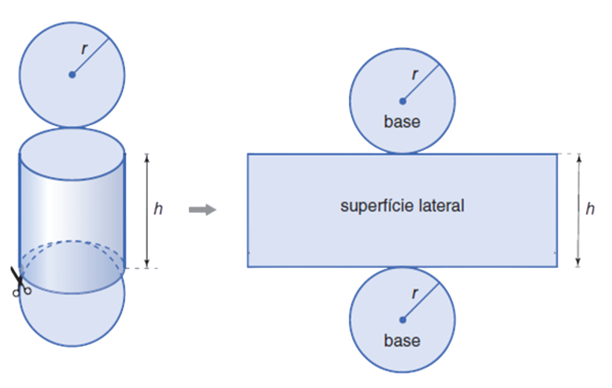
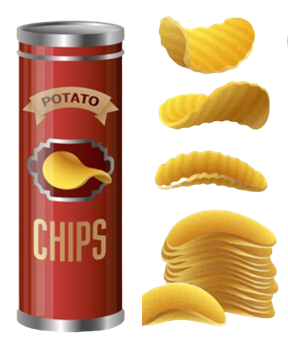
Coincidentemente, essa seria a forma de uma lata de batatas chips se abríssemos uma de suas laterais! É dessa maneira que a fábrica de batatas vai pensar na hora de construir a embalagem.
Observando a planificação, percebemos que para cada lata são necessários dois círculos eum retângulo para formar a embalagem como a conhecemos. Assim, é possível saber, por exemplo, a quantidade de material a ser fabricado para formar o produto.
Sabendo que é possível planificar sólidos geométricos, vamos ver como fracionar essas formas planificadas e como os números decimais poderão nos ajudar! Vamos juntos!
Uma Aventura Matemágica Através das Frações e dos Números Decimais
Vamos começar pelas frações: os pedacinhos mágicos!
Podemos dizer que a pizza é a planificação de um sólido geométrico chamado esfera, correto?
Imagine que você tem uma pizza deliciosa na sua frente. Pense no seu sabor favorito! Agora, você divide essa pizza em 8 partes iguais. Cada fatia é uma fração.
Se a pizza está dividida em 8 fatias e você pega 2 dessas delas, podemos dizer que você pegou 2/8 (dois oitavos) da pizza.
As frações apresentam, como num passe de mágica, a quantidade que você tem de algo em relação ao todo! Vamos reforçar mais um pouco sobre esse tema?
Reveja o tema de Frações com diversos exemplos práticos neste vídeo disponibilizado na internet. Clique aqui e aperte o play!
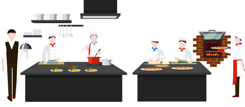
Sabia que, além das frações, é possível identificar partes de um todo por meio dos números decimais? Além de contar quantos pedaços de pizza você comeu! HAHAHA! Avance para saber mais!
Pizza de números decimais
Sabe a sua pizza inteira? Essa pizza representa o número inteiro 1.
Agora, se você cortar essa pizza em10 pedaços iguais, cada pedaço seria como 1 décimo da pizza.
Aqui, estão alguns exemplos de como os números decimais funcionam usando a pizza:
1
Um décimo
2
Vinte e cinco centésimos
3
Meio
4
Um inteiro e setenta e cinco centésimos
Então, os números decimais nos ajudam a representar partes menores de um todo, assim como os pedaços de uma pizza. É uma forma deliciosa e visual de entender como os números decimais funcionam!
Você também encontrará muitos números decimais em receitas doces e salgadas, por isso, é muito importante que você compreenda esses conceitos. Para ver um exemplo de números decimais na culinária, assista a este vídeo clicando aqui.

Jogando com frações e números decimais na prática
Vamos explorar a soma de frações e os números decimais utilizando o exemplo da pizza. Vamos considerar a seguinte situação:
Você tem uma pizza de muçarela e, inicialmente, você comeu dela. Depois, o seu amigo trouxe mais 0.6 de pizza de frango. Para saber o quanto de pizza vocês têm no total, precisamos realizar uma soma.
Somando as frações:
Primeiro, somaremos a fração . Se você comer de uma pizza e depois o seu amigo trouxer mais pizza, somamos + 0.6. Para fazer isso, precisamos ter a mesma base. Podemos converter 0.6 em uma fração com denominador 4 multiplicando o numerador e o denominador por 4: +
Agora, somamos os numeradores mantendo o denominador comum: + = +
Em seguida, somamos os numeradores: =
Simplificamos a fração, se possível:
Muito bem! Já vimos a soma das frações, agora, vamos ver a soma dos números decimais!
Somando os números decimais:
Agora, se quisermos representar como número decimal, basta dividir o numerador pelo denominador: = 0.85
Resposta final:
Então, se você comeu de pizza de muçarela e o seu amigo trouxe mais 0.6 de pizza de frango, você agora tem 0.85 de pizza no total.
Muito bem!
Você viu que os sólidos geométricos podem ser planificados, fracionados e calculados por meio de frações e números decimais, certo?
E se eu te disser que os sólidos geométricos podem nos ajudar a calcular e medir volume? Pois é! Lembra quando falamos sobre os dados planificados? Eles nos lembram uma caixa de entrega, como essas que recebemos ao fazer compras online.
Nas próximas seções, falaremos um pouco mais sobre cubos, volume, litros, entre outros temas importantes!
A sua encomenda chegou!
Você já viu como as encomendas que pedimos via internet chegam? Na maioria dos casos, bem organizadas dentro das caixas, certo? Os objetos em geral ocupam todo ou quase todo o espaço da caixa, para garantir não só uma boa apresentação ao abrirmos a caixa,mas também para que a encomenda chegue inteira e em segurança. Isso acontece porque as empresas sabem o volume de cada caixa.
A grandeza física que indica a quantidade de matéria presente em um corpo é chamada de volume. Ou seja, o quanto de coisas é possível de se colocar em uma caixa de transporte é chamado de volume! Quantas caixas cabem em uma prateleira, em um caminhão ou em uma sala de armazenamento também são exemplos de volume.
Para uma análise mais prática, como exemplo, considere um cubo com 1 cm de aresta. A porção do espaço ocupada por esse cubo é uma unidade de volume definida como 1 cm3 (lemos: “um centímetro cúbico”).
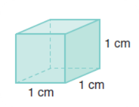
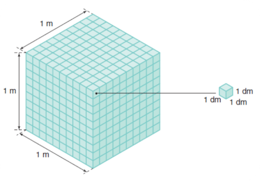
Além do centímetro, milímetro,decímetro, metro cúbico e as demais medidas de volume, existe também uma outra medida muito comum, presente principalmente quando se trata de volume líquido.Consegue lembrar? Continue em frente e você verá logo mais!
Quantos litros cabem aqui?
Uma outra unidade de volume muito usada é o litro (L), definida como 1 dm3 (um decímetro cúbico). Assim, adotando o centímetro como unidade, vamos medir o volume de um paralelepípedo retorretângulo de dimensões 5 cm, 3 cm e 4 cm. Para isso, dividimos o paralelepípedo em cubinhos com 1 cm de aresta:
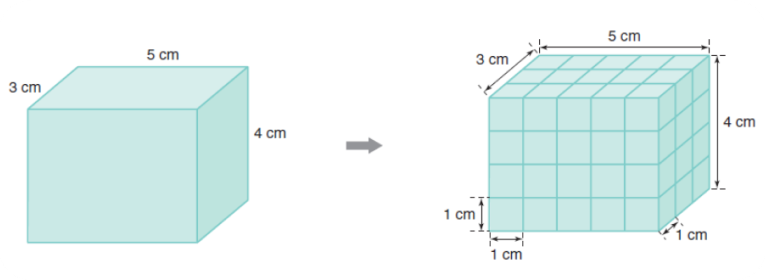
Volume = 5 x 3 x 4 = 60 cm3 = 0,06 dm3 = 0,06 L
Vejamos um outro exemplo de cálculo de volume:
1. Uma caixa-d’água tem, internamente, a forma de um paralelepípedo retorretângulo, com 3 m de comprimento, 2 m de largura e 1 m de altura. Vamos calcular a capacidade dessa caixa-d’água em litros?
A capacidade de um recipiente é o seu volume interno.O volume interno V da caixa-d’água é dado por:
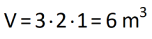
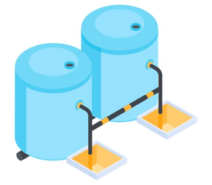
Como 1 L = 1 dm3 e 1 m3 = 1000 dm3, temos:
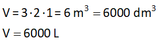
Logo, a capacidade da caixa-d’água, que é o seu volume interno, é 6000L.
Vamos a mais um exemplo prático!
2. Para calcular a capacidade de um jarro de forma irregular, Paulo retirou água de um aquário que tem a forma de um paralelepípedo retorretângulo e encheu completamente o jarro.
Observando que o fundo do aquário tem 50cm de comprimento por 30 cm de largura e que, após a retirada, o nível da superfície da água desceu 2 cm, o rapaz concluiu, corretamente, que a capacidade do jarro é de 3 L . E a explicação é simples:
Como o fundo do aquário tem forma retangular e, após tirar a água, o nível da superfície baixou 2 cm, basta multiplicar as medidas da seguinte forma:
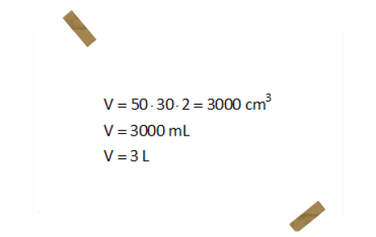Compreendendo as origens das frações!
Um pouco de história...
Como você viu ao longo deste material, as frações têm grande importância e utilidade em nossas vidas, por isso, nada mais justo do que conhecer a sua origem e funcionalidade.
Houve um tempo em que o homem não conhecia as frações e elas só foram introduzidas quando começamos a medir e a contar. Assim, ao dividir um pedaço de madeira em duas partes de igual comprimento, cada uma delas tinha metade do comprimento da madeira original. Em símbolos, temo as seguintes representações de frações:
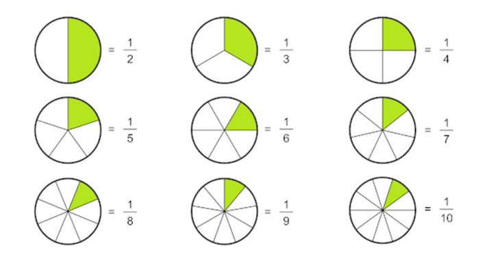
Clique na imagem para ampliar.
Os egípcios, provavelmente, foram os primeiros a inserirem as frações em seu sistema de numeração, mas outros povos antigos também o fizeram. E, assim como para os números inteiros, cada um tinha a sua própria maneira de representar as frações. Observe na imagem como é presente a ideia de que existe um inteiro e outras partes junto da maior.
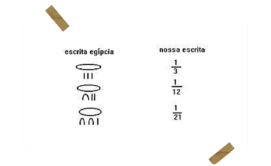É importante lembrar que, assim como outros elementos da geometria, da matemática e de outras matérias específicas, tudo tem nome. E, nesse momento da sua trajetória de estudante, é fundamental saber que cada número tem um nome, e cada um deles tem uma função na fração. Veja:
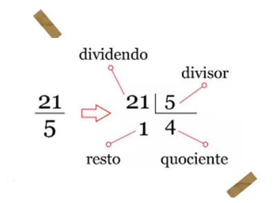
O número 21 é o dividendo, ou seja, o número que será dividido.
O número 5 é o divisor,
pelo qual 21 será dividido.
O número 4 é o
quociente (resultado da
divisão).
O número 1 é o resto, ou
seja, o que sobrou da divisão.
Muito bem, estudante!
Você chegou ao fim deste material e, ao longo dos tópicos, você viu os seguintes temas:
- Planificações dos sólidos geométricos.
- Frações e como calcular utilizando frações.
- Cálculo de volume e litro.